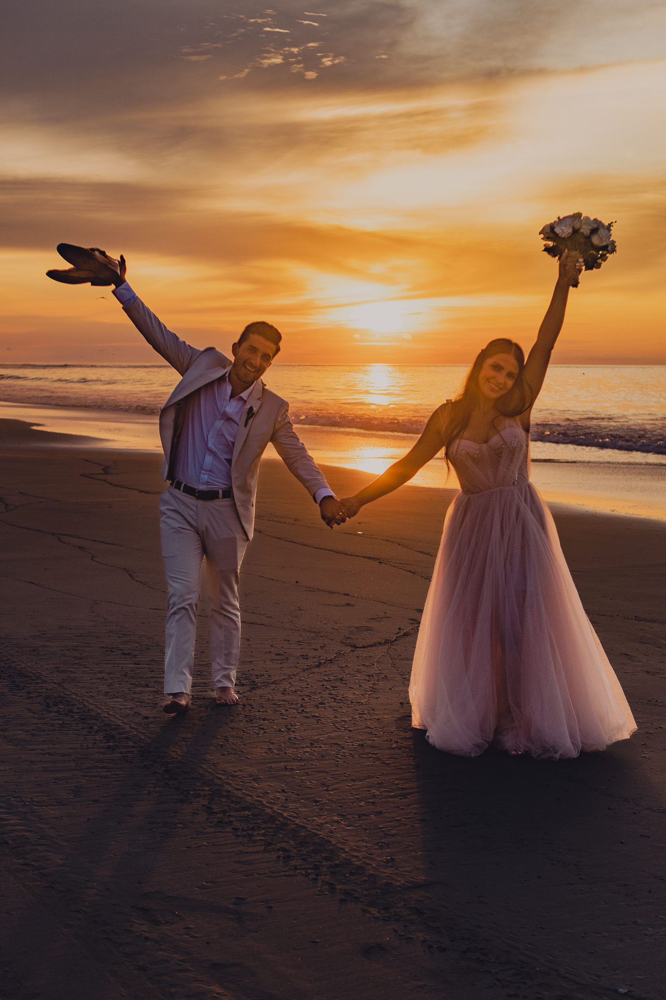
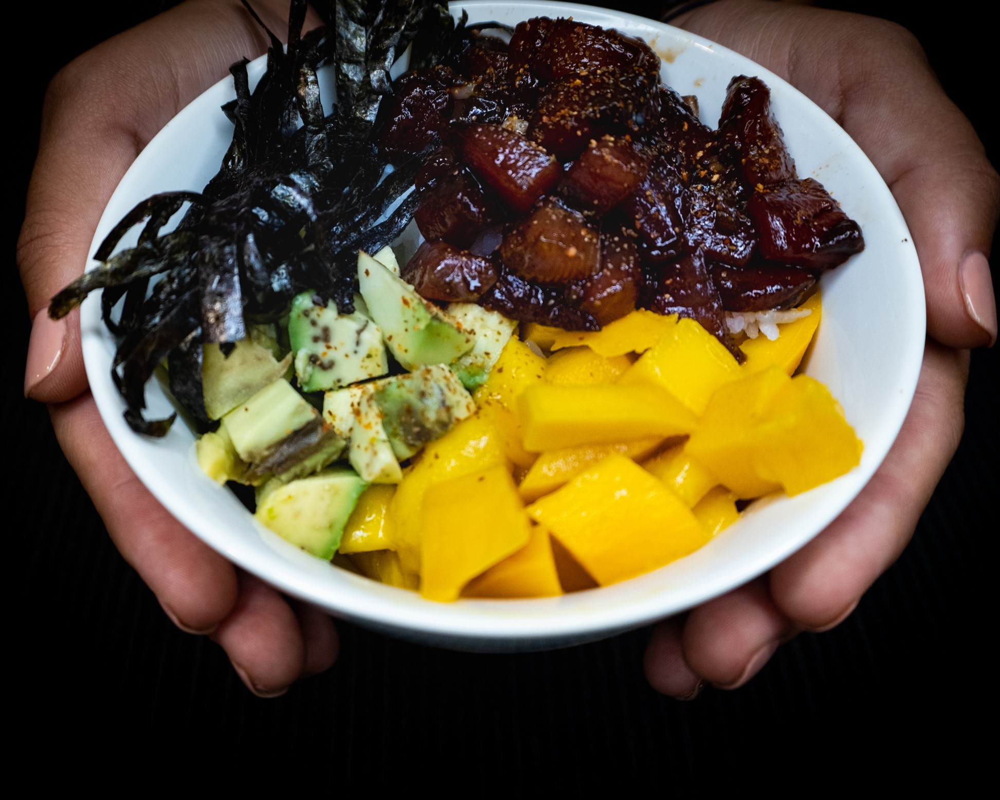

Contar historias con luz, naturaleza y emociones reales




y mi trabajo no es solo fotografía o filmmaking; es la culminación de múltiples pasiones. Como ex-chef, entiendo la composición, la textura y el arte de la presentación en la gastronomía. Como DJ aficionado, aporto un sentido innato del ritmo y la cadencia que se traduce en transiciones fluidas y una narrativa dinámica en mis videos.
Pero lo que realmente me define es mi experiencia como instructor de deportes náuticos (kitesurf, windsurf, efoil, etc.): he aprendido a leer la luz en su momento más espectacular —desde el amanecer hasta el atardecer—, y el misterio de las estrellas y la luna, y a capturar la energía humana en su estado más puro.
Si buscas un creativo que combine la precisión técnica con una perspectiva vibrante y sensorial para bodas, deportes, gastronomía o lifestyle, has encontrado la lente que estabas buscando.
La respuesta es simple: no solo documento momentos, sino que los vivo y los siento antes de capturarlos. Mi experiencia con mi estilo de vida me ha enseñado el valor de la energía, la conexión humana y el ritmo perfecto.
Traslado esa intensidad a cada proyecto, ya sea inmortalizando la adrenalina pura de un evento deportivo, la emoción íntima de una boda, la pasión detrás de un plato gastronomico o la esencia auténtica del lifestyle. Busco la luz, la historia y la chispa vital que hace que tus proyectos sean inolvidables. Si buscas un filmaker y fotógrafo que combine la visión artística con la experiencia real y la capacidad de adaptación, has encontrado a tu aliado